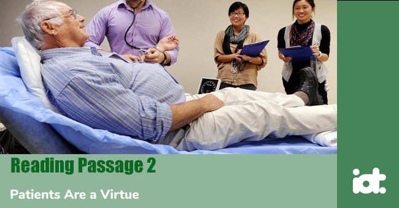

Part 1
Reading Passage 1
You should spend about 20 minutes on Questions 1 -13, which are based on Reading Passage 1 below.
Secret of Thailand's Success?
A. It is a question officials here in Asia are being posed more and more: Why are your economies so vibrant? Answers include young and swelling populations, decreased debt, growing cities, emerging middle-class consumer sectors, evolving markets and, of course, ( China’s rise. Add this to that list: Women and their increasing role in Asia’s economies. The idea is that the more opportunities women have, the more vibrant economies are and, consequently, the less need there is to amass a huge public debt to boost growth. It is an idea bolstered by a new survey by MasterCard International Inc., which compares the socio-economic level of women with men in Asia-Pacific nations. The gauge uses four key indicators: participation in the labour force, college education, managerial positions, and above-median income.
B. Which Asian nation is doing host when it comes to women’s advancement? Thailand. It scored 92.3 of a possible 100, and according to MasterCard’s index, 100 equals gender equality. The survey was based on interviews with 300 to 350 women in thirteen nations and national statistics. Malaysia came in second with a score of 86.2, while China came in third with 68.4. The average score in Asia was 67.7. At the bottom of the list is South Korea (45.5), followed by Indonesia (52.5), and Japan (54.5). Perhaps it is a bizarre coincidence, yet MasterCard’s findings fit quite neatly with two important issues in Asia: economic leadership and debt. Thailand, Malaysia, and China are three economies widely seen as the future of Asia. Thailand’s economic boom in recent years has prompted many leaders in the region to look at its growth strategy. Malaysia, which has a female central bank governor, is one of Asia’s rising economic powers. China, of course, is the world’s hottest economy, and one that is shaking up trade patterns and business decisions everywhere.
C. Something all three economies have in common is an above-average level of female participation. What the three worst ranked economies share are severe long-term economic challenges of high levels of debt and a female workforce that is being neglected. Research in economic history is very conclusive on the role of women in economic growth and development, says Yuwa Hedrick-Wong, an economic adviser to MasterCard. The more extensive women’s participation at all areas of economic activities, the higher the probability for stronger economic growth. That, Hedrick-Wong says, means societies and economies that consistently fail to fully incorporate women’s ability and talent in businesses, and the workplace will suffer the consequences. Take Korea, which has been walking in place economically in recent years. Immediately following the 1997— 1998 Asian financial crisis, Korea became a regional role model as growth boomed and unemployment fell. Yet a massive increase in household debt left consumers overexposed and growth slowed.
D. Maybe it is a just coincidence that Korea also ranks low on measures of gender equality published by the United Nations. As of 2003, for example, it ranked below Honduras, Paraguay, Mauritius, and Ukraine in terms of women’s economic and political empowerment. Utilising more of its female workforce would deepen Korea’s labour pool and increase potential growth rates in the economy. The same goes for Japan. The reluctance of Asia’s biggest economy to increase female participation and let more women into the executive suite exacerbates its biggest long-term challenge: a declining birth rate. In 2003, the number of children per Japanese woman fell to a record low of 1.29 versus about. 2 in the early 1970s. Preliminary government statistics suggest the rate declined further in 2004. The trend is nothing short of a crisis for a highly indebted nation of 126 million that has yet to figure out how to fund the national pension system down the road. Yet Japan has been slow to realise that for many women, the decision to delay childbirth is a form of rebellion against societal expectations to have children and become housewives,
E. It may be 2005, yet having children is a career-ending decision for millions of bright, ambit ions, and well-educated Japanese, Until corrected, Japan’s birth rate will drop and economic growth will lag, UN Secretary General Kofi Annan was absolutely right earlier this month when he said no other policy is as likely to raise economic productivity than the empowerment of women. Here, in Thailand, the government is getting some decent marks in this regard, and the economy’s 6 per cent-plus growth rate may be a direct result. Thailand still has a long way to go. Yet the Bank of Thailand’s deputy governor, Tarisa Watanagase, is a woman, as are seven of nine assistant governors. Then there’s Jada Wattanasiritham, who runs Siam Commercial Bank Plc, Thailand’s fourth-biggest lender. How many female chief executives can you name in Japan or Korea? Looked at broadly in Asia, MasterCard’s survey is on to something. It is that giving women more opportunities to contribute to an economy is not just about fairness, but dollars and sense, too.
Part 2
Reading Passage 2
You should spend about 20 minutes on Questions 14 - 26, which are based on Reading Passage 2 below.

Patients Are a Virtue
A. Despite conference jeers, job cuts, and a financial crisis, health secretary Patricia Hewitt may find a reason to smile this week, as the NHS (British National Health Service) was named one of the top places to work by students. Among engineering, science, and IT students, the health service was ranked second in this year’s Univer-sum UK graduate survey of ideal employers, a leap of 54 places from last year. The annual survey, conducted in the UK since 1997, canvassed the opinions of more than 7,700 final and penultimate-year students studying for degrees in business, engineering, science, IT, and the humanities, at 39 universities, between January and March this year.
B. Each student was presented with a list of 130 employers, nominated by students through a separate process, from which they selected the five they considered to be ideal employers. The Universum list is based on the frequency of an organisation being selected as an ideal employer, following a weighting process. This year, government departments and public sector organisations dominated the top spots, with the BBC ranked first among humanities, engineering, science, and IT students, retaining its place from last year, and coming third for those studying business. Among humanities students, the BBC was followed closely by the Foreign and Commonwealth Office and the Civil Service fast stream. The Cabinet Office and the Ministry of Defence were not far behind, ranked fifth and sixth respectively. As well as the NHS, engineering, science, and IT students favoured the Environment Agency, which leapt 83 places, from 86 in 2005 to number three this year. Meanwhile, business students voted accountancy giants PricewaterhouseCoopers (PwC) as their favoured employer, followed by HSBC.
C. At a London awards ceremony sponsored by the Guardian, Foluke Ajayi, head of NHS careers at NHS employers, said its success this year reflected the reality of the health service, which is the third largest employer in the world and the largest in Europe. “We employ people in other clinical areas, such as health care. We employ IT managers, engineers, architects,” she said, adding that the health service is no longer seen as a “second choice” career. “People recognise that they can give something back to the community, but still develop a worthwhile career.”
D. Sarah Churchman, director of student recruitment and diversity at PwC, said her company’s success is down to a good campus presence, its commitment to invest in its employees and, with offices around the world, the chance to travel, something which just under half of the students polled said was an important factor when it came to looking for work. One of the big four accountancy firms, PwC is not into gimmicks, and it does not offer freebies but, said Churchman, it does offer “a solid foundation” for anyone wanting a career in business. “We sell our people skills, so we are interested in building skills. We’re not selling something, we invest in our people,” she added.
E. Further down the rankings, but still with reason to celebrate, was John Lewis, which matched bumper sales this year with a leap from 111th place in 2005 to 26th among this year’s humanities students. Sky found itself in 12th place, up from 104th last year, and the Environment Agency also proved popular among this student group, rising from 138th in 2005 to 7th this year. Among the business fraternity, shell saw a reversal of fortunes, rising to 30th place after last year’s 76thposition. There were a few dramatic drops in the rankings. The Bank of England fell from 14th in 2005 to 27th this year among humanities students, although it retained its mid-table position among those studying business. British Airways also saw a slight dip, as did McKinsey & Co, which dropped from 11th to 22ndamong business undergraduates.
F. Perhaps more surprisingly, this year was the first appearance in the rankings of Teach First, a small charity launched three years ago that aims to create the “leaders of the future” by encouraging top graduates who would not normally consider a career in teaching to commit to work in “challenging” secondary schools for at least two years. The organisation came straight in at number eight among humanities students and was voted 22nd by those studying engineering, science, and IT. James Darley, director of graduate recruitment at Teach First, said he was “bowled over” by the news. “We were not expecting this. We’re a registered charity, only able to physically go to 15 universities.”
G. The scheme, based on one run in the US, has the backing of more than 80 businesses, including Deloitte and HSBC. During their two years, candidates undertake leadership training and emerge from the programme with a range of skills and experiences. “We hope in the long term they will be our ambassadors, as we call them, in politics, industry, charities, who will have done it and continue to support the educationally disadvantaged,” adds Darley. This year, 260 graduates are expected to take up the Teach First challenge in schools in London and Manchester, More are expected over the coming years, as the scheme expands to Birmingham and three other cities by 2008. Of the first set of recruits to complete the programme, half have gone on to work for “some amazing companies”, while the other half have chosen to stay on in their schools for a further year - 20% in leadership roles.
H. While more than half of students were concerned about achieving a good work life balance, a third said they wanted a job that would challenge them. Although male Students tended to focus more on the practical aspects of work, such as “building a sound financial base”, women, particularly those studying for humanities degrees, had a more idealistic outlook, saying making a contribution to society was a key career goal. Almost half of all students said that paid overtime was a key part of any company compensation package, However, business students said that the most important compensation, apart from salary, was performance-related bonuses, while important considerations for humanities students were retirement plans. Working overseas also scored highly among those surveyed this year, with 45% of business students, and 44% of humanities students, listing it as a priority. Ethical considerations and corporate social responsibilities were also mentioned, with a large percentage of humanities and engineering, science and IT students saying it was a key consideration when it came to choosing an employer.
Part 3
Reading Passage 3
You should spend about 20 minutes on Questions 27 - 40, which are based on Reading Passage 3 below.
Rise of the Robots
If you are into technology, you are living in wonderful times. Things are developing in leaps and bounds, especially gadgets. Let us look at the technology that is set to break through.
CELESTRON SKYSCOUT
Backyard stargazing goes seriously hi-tech with the Celestron SkyScout, which was judged to be the Best of Innovations at the New York Consumer Electronics Show press preview event in November. It is not difficult to see why. The SkyScout is a hand-held viewing device that is capable of finding and identifying more than 6,000 celestial objects visible to the naked eye, thus transforming the night sky into your own personal planetarium. Using GPS technology and a substantial celestial database, the camcorder-sized SkyScout enables stargazers to point the device at any visible object in the sky, press a button, and then listen to a commentary. For the truly celestially challenged, if you want to view a star or planet but do not have a clue which bit of the heavens to look in, do not despair; the SkyScout’s "locate” feature will guide you to it using illuminated arrows in the viewfinder.
NOKIA N91
This amazing mobile jukebox is due out early in 2006. Nokia’s N91 looks set to be in a class of its own as a multimedia mobile phone. It will play music, take photos, surf the web and download videos, store contact details, and generally organise your life. The robust little phone, resplendent in its stainless steel case, is the first Nokia to be equipped with a hard drive (4Gb), which means that it can store up to 3,000 songs. The N91, which has a hi-fi quality headset and remote control, supports a wide range of digital music formats, including MP3, Real, WAV, and WMA. It uses wireless technology to allow users to find and buy music from the operator’s music store. You can also drag and drop music from your PC to the N91 and manage and share playlists. If you can find the time, you can get on the blower, too.
SEIKO SPECTRUM E-PAPER WATCH
The Seiko Spectrum is no ordinary wristwatch. At first glance, it is an attractive and futuristic bracelet-style watch. Look closer, however, and you will notice that its display is unlike any you have seen before. Rather than the usual LCD screen, the display is made of “e-paper” - from the electronic paper pioneers E Ink Corp - and shows a constantly changing mosaic pattern along with the time. Because e-paper is so flexible and thin, it allows the display to curve round the wrist along with the watch band - something conventional liquid-crystal displays cannot do, as they have to be flat. Seiko says the e-paper display not only produces far better contrast than an LCD screen, but requires no power to retain an image, so the batteries last longer. Seiko is releasing only 500 of the watches next month, priced at about £1,250 - so you'd better lose no time.
HIGH-DEFINITION TV
HDTV, already available in the United States, Japan, and Australia, will hit the UK in 2006. When you watch a programme filmed in the HD format, you will see a much sharper, clearer and more vibrant image. This is due partly to the way a programme is filmed, but also to the high-definition TV set itself, which uses either 720 or 1,080 visible rows of pixels (depending on which format the individual HDTV uses) to display images, compared to the 576 rows of pixels used in current sets.
ELECTROLUX TRILOBITE 2.0 ROBOT VACUUM CLEANER
Next time you are expecting visitors, do not bother to vacuum first - wait until they arrive, and then entertain them with this little gadget. The Electrolux Trilobite 2.0 is a robotic vacuum cleaner that navigates its way around your floors using ultrasound, just like a bat. It pings out ultrasound vibrations at surfaces to create a map of the room, which it remembers for future cleaning assignments. The Trilobite has no problem avoiding collision with things placed on the floor. Special magnetic strips are placed in doorways, near stairs and other openings. These act as a wall, keeping the Trilobite in the room. You can also programme it to glide round when you’re at work or after you've gone to bed. When Electrolux introduced the original Trilobite in 2001, it was voted among the 100 most innovative designs (though whether the judges were dedicated couch potatoes, and thus biased, we were not aide to discover). The name comes from the hard-shelled sea creature from the Paleozoic era (between 250 million and 560 million years ago) that roamed the ocean floor feeding on particles and small animals.
HONDA ASIMO ROBOT
Need an extra pair of hands around the office? Look no further; this mouth, the Honda Motor Company showcased its second-generation humanoid robot, Asimo. The machine has come a long way since its first incarnation five years ago. The 1.3 metre-tall droid is now capable of performing a variety of office tasks, including reception duties, serving drinks and acting as an information guide, as well as making deliveries. Using multiple sensors, Asimo has the ability to recognise the surrounding environment and interact with people using integrated circuit tags. It can walk and run at a fair pace, and push a cart. Honda plans to start using Asimo’s receptionist functions at its Wako Building in Japan early in 2006, and it is hoped it will become available for leasing afterwards. It could soon be pushing a cart at an office near you.
Part 1
Questions 1-4
The text has 5 paragraphs (A - E).
Which paragraph contains each of the following pieces of information?
1. The fact that a woman runs one of Thailand’s biggest banks
2. The number of countries included in the survey
3. The fact that Japan’s birth rate is falling quickly
4. The criteria used to get a score for each country
Questions 5-8
Complete the following sentences using NO MORE THAN THREE WORDS from the text for each gap.
Higher consumption in the 5 sector of the market is one reason that Asia’s economies are doing well.
The scores were decided through a combination of interviews and 6
Higher 7 has created an economic problem for Korea.
Japanese politicians have not yet decided how to get money for the 8
Questions 9-13
Do the following statements agree with the information given in Reading Passage 1?
In boxes 9 - 13 on your answer sheet, write
| TRUE. | if the statement agrees with the information | |
| FALSE. | if the statement contradicts the information | |
| NOT GIVEN. | If there is no information on this |
9. Other countries are looking at the example of Thailand to see if its policies can help their economies.
10. Higher female participation in an economy always leads to greater economic growth.
11. Female participation in the economy is lower in Japan than in most other developed economies.
12. Most of the Bank of Thailand’s assistant governors are female.
13. The writer considers 'fairness’ to be a bad reason for giving women top jobs.
Part 2
Questions 14-17
The text has 8 paragraphs (A - H).
Which paragraph does each of the following headings best fit?
14. Most popular employers for different students
15. Students’ expectations
16. Give and develop with the NHS
17. Reason for the NHS to be happy
Questions 18-22
According to the text, FIVE of the following statements are true.
Write the corresponding letters in answer boxes 18 to 22 in any order.
Questions 23-24
According to the information given in the text, choose the correct answer or answers from the choices given.
Questions 25-26
According to the information given in the text, choose the correct answer or answers from the choices given.
Sarah Churchman says PwC did well in the survey because it
Part 3
Questions 27-30
For each question, only ONE of the choices is correct.
Write the corresponding letter in the appropriate box on your answer sheet.
Questions 31-35
Complete the following sentences using NO MORE THAN THREE WORDS from the text for each gap.
The SkyScout uses GPS and 31 to help you find a star.
The Seiko Spectrum does not need batteries to power the 32
HDTV uses more 33 than conventional TV.
The Trilobite 2.0 could be used to 34 guests.
Asimo first appeared 35
Questions 36-40
Do the following statements agree with the information given in Reading Passage 3?
In boxes 36 - 40 on your answer sheet, write
| TRUE. | if the statement agrees with the information | |
| FALSE. | if the statement contradicts the information | |
| NOT GIVEN. | If there is no information on this |
36. The Nokia N91 is strong.
37. E-paper can be torn easily.
38. HDTV is filmed differently to conventional TV.
39. The Trilobite 2.0 looks just like the original design.
40. Asimo is available for export.